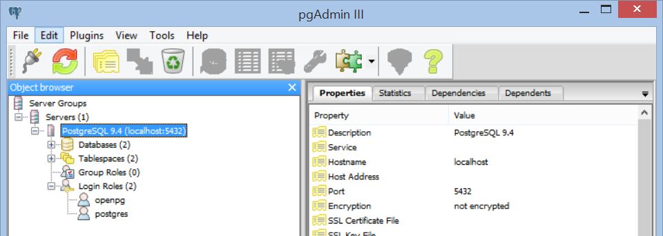
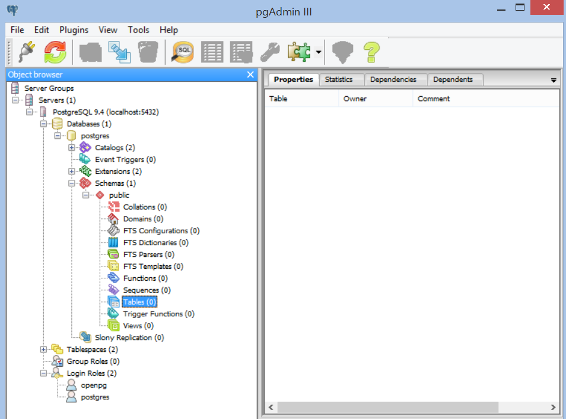
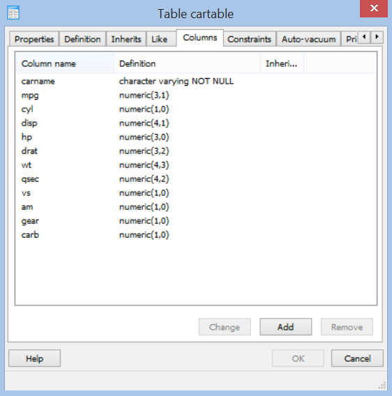
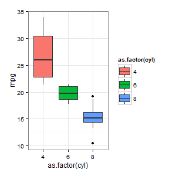

Getting started with PostgreSQL in R
When dealing with large datasets that potentially exceed the memory of your machine it is nice to have another possibility such as your own server with an SQL/PostgreSQL database on it, where you can query the data in smaller digestible chunks. For example, recently I was facing a financial dataset of 5 GB. Although 5 GB fit into my RAM the data uses a lot of resources. One solution is to use an SQL-based database, where I can query data in smaller chunks, leaving resources for the computation.
While MySQL is the more widely used, PostgreSQL has the advantage of being open source and free for all usages. However, we still need to get a server. One possible way to do it is to rent Amazon server, however, as I don’t have a budget for my projects and because I only need the data on my own machine I wanted to set up a server on my Windows 8.1 machine. This is how I did it.
Installing software, Starting the Server and Setting up new Users
First, we need to install the necessary software. Besides R and RStudio we need to install PostgreSQL, that we find PostgreSQL. When installing we are asked to provide a password, just remember it as we need it later. Say for this example we set the password to: "DataScienceRocks".
Now we can already access and use the database, for example we can start the interface (pgAdmin III) that was automatically installed with PostgreSQL. To connect to the database double click on the server in pgAdmin III and type in your password. The server seems to run after the installation as well. If this is not the case (i.e. you get the error “Server doesn’t listen” when trying to connect to the server with pgAdmin III), you can start the server with the following command in the command line:
pg_ctl -D "C:\Program Files\PostgreSQL\9.4\data" startAs we can see, we only have one user (“postgres”). It is good practice to use the database with another user that has no createrole (think of it as a non-admin user).
To set up a new user I follow PostgreSQL Server installation and configuration explanation. Start the command line (go to the start menu and type cmd") and move to the folder where you installed PostgreSQL (more precisely, the bin-folder). In my case I navigated to the folder by typing:
cd C:/Program Files/PostgreSQL/9.4/binNow we need to create a new user (openpg), which we can do by executing the following command:
createuser.exe --createdb --username postgres --no-createrole --pwprompt openpgWe have to enter the password for the new user twice (note that there is no feedback from the commandline), for this example I set it to “new_user_password”, lastly we are asked to give our password for the main user (“postgres”) which is in this case “DataScienceRocks”, as specified during the installation.
We can check if we have two users by going into pgAdmin III, which should look like this:

Creating a Table in pgAdmin III
An easy way to create a table (database) is to use pgAdmin III. Right click on the “Tables” and choose “New Table”.

For this example we create a table called cartable that we will later populate with the dataset of mtcars. For the dataset we need to specify the columes and their types as shown in the next picture.

Lastly, we need to specificy a primary key in constraints. In this case I use the carname column as key.
Connection with R
Now it is time to connect to the database with R. This approach uses the RPostgreSQL and this R and PostgreSQL – using RPostgreSQL and sqldf.
To connect, we need to enter the following commands in R:
# install.packages("RPostgreSQL")
require("RPostgreSQL")
# create a connection
# save the password that we can "hide" it as best as we can by collapsing it
pw <- {
"correcthorsebatterystaple"
}
# loads the PostgreSQL driver
drv <- dbDriver("PostgreSQL")
# creates a connection to the postgres database
# note that "con" will be used later in each connection to the database
con <- dbConnect(drv, dbname = "postgres",
host = "localhost", port = 5432,
user = "openpg", password = pw)
rm(pw) # removes the password
# check for the cartable
dbExistsTable(con, "cartable")
# TRUEIf we don’t get an error, that means we are connected to the database.
Write and Load Data with RPostgreSQL
The following code show how we can write and read data to the database:
# creates df, a data.frame with the necessary columns
data(mtcars)
df <- data.frame(carname = rownames(mtcars),
mtcars,
row.names = NULL)
df$carname <- as.character(df$carname)
rm(mtcars)
# writes df to the PostgreSQL database "postgres", table "cartable"
dbWriteTable(con, "cartable",
value = df, append = TRUE, row.names = FALSE)
# query the data from postgreSQL
df_postgres <- dbGetQuery(con, "SELECT * from cartable")
# compares the two data.frames
identical(df, df_postgres)
# TRUE
# Basic Graph of the Data
require(ggplot2)
ggplot(df_postgres, aes(x = as.factor(cyl), y = mpg, fill = as.factor(cyl))) +
geom_boxplot() + theme_bw()
Lastly, if we are finished, we have to disconnect from the server:
# close the connection
dbDisconnect(con)
dbUnloadDriver(drv)Outro
If you have any questions about the code, PostgreSQL or pgAdmin III or if you have remarks or have found a way to do it better/faster feel free to leave a comment or write me an email.
Useful links:
Get the PostgreSQL software here: http://www.postgresql.org/download/windows/
PostgreSQL commandline commands: http://www.postgresql.org/docs/9.4/static/app-pg-ctl.html
Create a new User: https://doc.odoo.com/install/windows/postgres/
For a short introduction to postgreSQL queries have a look at this: http://www.postgresql.org/docs/8.4/static/tutorial-select.html
Appendix
If you want to create a table in R instead of pgAdmin III you can do that of course. The following creates the same table as the we did earlier in pgAdmin III:
# specifies the details of the table
sql_command <- "CREATE TABLE cartable
(
carname character varying NOT NULL,
mpg numeric(3,1),
cyl numeric(1,0),
disp numeric(4,1),
hp numeric(3,0),
drat numeric(3,2),
wt numeric(4,3),
qsec numeric(4,2),
vs numeric(1,0),
am numeric(1,0),
gear numeric(1,0),
carb numeric(1,0),
CONSTRAINT cartable_pkey PRIMARY KEY (carname)
)
WITH (
OIDS=FALSE
);
ALTER TABLE cartable
OWNER TO openpg;
COMMENT ON COLUMN cartable.disp IS '
';"
# sends the command and creates the table
dbGetQuery(con, sql_command)Appendix 2: Improvements
Almost a year after I wrote this blog post, I have made my own fair amount of experience with SQL and wanted to share some experience with you.
First: You may want to write a short function that connects you to the server and makes sure the connection closes again. What I usually use is something like this:
# 1) for quering from SQL
SQLCommand <- function(query){
on.exit(dbDisconnect(con))
con <- dbConnect(drv = dbDriver("PostgreSQL"),
dbname = "postgres", host = "localhost",
port = 5432, user = "openpg",
password = "correcthorsebatterystaple")
tmp <- dbGetQuery(con, query)
}
# 2) for writing to SQL
SQLWriteValues <- function(values, table){
on.exit(dbDisconnect(con))
con <- dbConnect(drv = dbDriver("PostgreSQL"),
dbname = "postgres", host = "localhost",
port = 5432, user = "openpg",
password = "correcthorsebatterystaple")
dbWriteTable(con, table, value = values, append = T, row.names = F)
return(NULL)
}I would then use it like this:
SQLWriteValues(df, "cartable")
df2 <- SQLCommand("SELECT * FROM cartable")Lastly, if you want to exclude the details of your connection such as username, password, etc. from your source code, because you work with an open github repository or you want to be able to change your passwords easily, I do the following, which outsources the connection to a config.yml (make sure that you include this file in your .gitignore) file and loads the necessary information using this:
config.yml (make sure that this file is in your working directory):
db:
host : "localhost"
dbname : "postgres"
user : "openpg"
port : 5432
password : "correcthorsebatterystaple"in your r-file:
library(yaml)
SQLCommand <- function(query){
on.exit(dbDisconnect(con))
con <- do.call(dbConnect,
c(drv = dbDriver("PostgreSQL"),
yaml.load_file("config.yml")$db))
tmp <- dbGetQuery(con, query)
return(tmp)
}
SQLWriteValues <- function(values, table){
on.exit(dbDisconnect(con))
con <- do.call(dbConnect,
c(drv = dbDriver("PostgreSQL"),
yaml.load_file("config.yml")$db))
dbWriteTable(con, table, value = values, append = T, row.names = F)
return(NULL)
}
# same as before
SQLWriteValues(df, "cartable")
df2 <- SQLCommand("SELECT * FROM cartable")David Zimmermann, PhD
Data Scientist
I am an economist by training, turned programmer/data scientist who loves to program with R, Python, and C++.